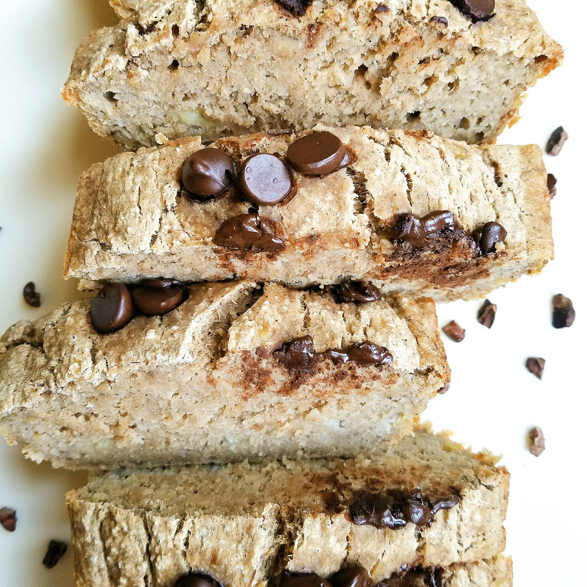
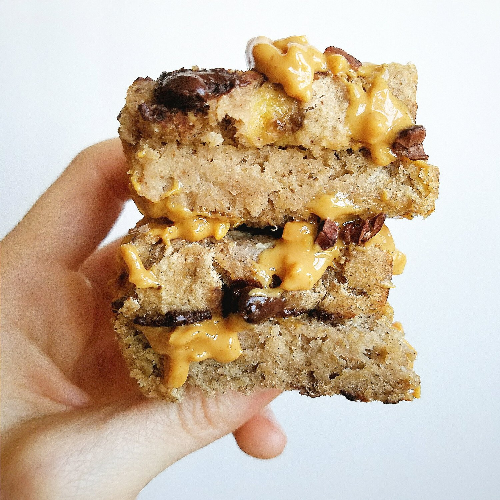
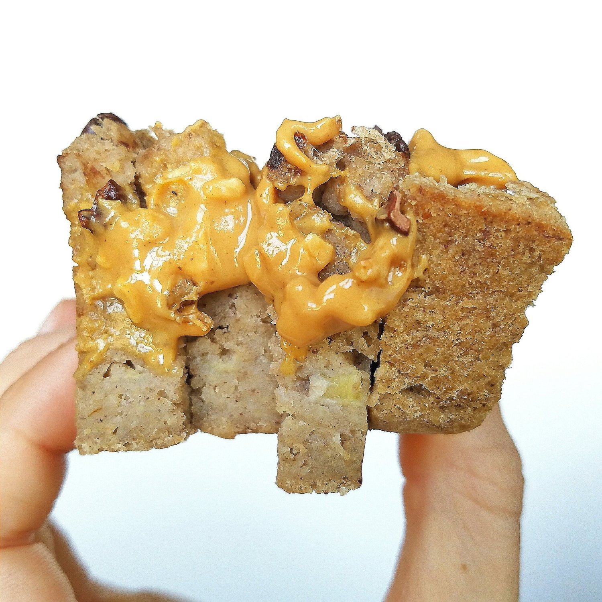

Chai Spiced Banana Bread (vegan, gluten free)



This Chai Spiced Banana Bread is everything you love about classic banana bread. This recipe is moist, naturally sweetened with bananas, and has a unique spice twist that really enhances the flavors. Not only is this banana bread simple and delicious, it is also completely vegan, gluten free, and sugar free. It is a great option for those wanting to keep sweets in their life without overloading on refined sugar.
I have like...negative minutes ever to bake anymore, so I'm always stupid eager for the weekends to bake. That's basically the only time I bake anymore; it's extra sad when the recipe comes out absolutely delicious like this, because that means the entire thing is gone by Tuesday. Seriously. This was one of those recipes that I finished up before even getting the recipe on the blog!
I really love moist cake lately. I used to be very into the dry, cakey style, but lately I've been loving things like brownies, blondies, and moist cakes like this banana bread. It's cakey...yet soft...the perfect combo. I should probably just keep a steady supply of banana bread, but I'm already going through enough bananas as it is making banana ice cream every day. I'm always scrambling to find more bananas and never have excess for baking. I just need to accept the fact that I should buy 40-50 at a time in bulk at the farmers market...I'm just in denial. I don't have a problem. Nope.
Since I've been enjoying banana bread a lot, I feel like it's important to switch up the flavors and additions now and then so it doesn't get boring. This time I decided to take a risk with...chai! And boy did it turn out to be a good risk. You have to try it out yourself to know what I mean. I lathered mine in Crazy Richard's peanut butter (because banana bread + PB is the new PB&J) and added more vegan chocolate chips.
This chai spiced banana bread is great cold or heated. It is completely vegan, gluten free, and sugar free. The bananas are so sweet that even the stevia is optional! Try this very simple recipe out yourself and experience the wonder.
Chai Spiced Banana Bread
Makes: 8 slices
-
3 medium bananas, very ripe and mashed
-
1.5 cups raw oats, ground into a flour
-
1/2 cup buckwheat flour
-
1/4 tsp cardamom
-
1/4 tsp ground cloves
-
1/2 tsp allspice
-
1/2 tsp cinnamon
-
1/2 tsp ground ginger
-
1/2 TBSP baking powder
-
1/4 cup baking stevia (Optional)
-
1/2 cup unsweetened almond milk
-
2 TBSP vegan chocolate chips, for topping (Optional)
-
Mash your bananas into a large mixing bowl. Then add the remaining ingredients and mix until even.
-
Once even, spray a bread loaf pan with nonstick spray and pour your batter in. If you'd like, top with chocolate chips - I recommend this for sure!
-
Bake at 350 F for 40-45 minutes.
-
Let cool 15 minutes, then cut into 8 slices. Enjoy!